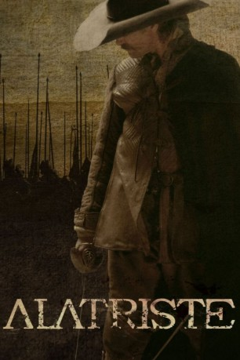
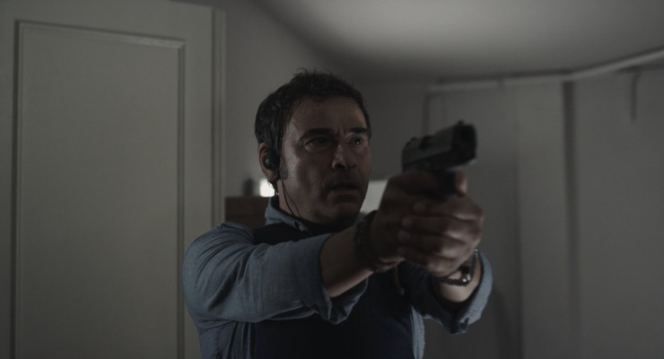
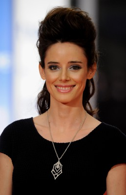
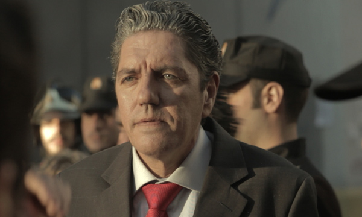
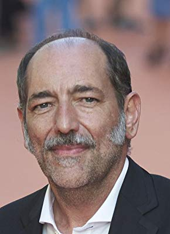
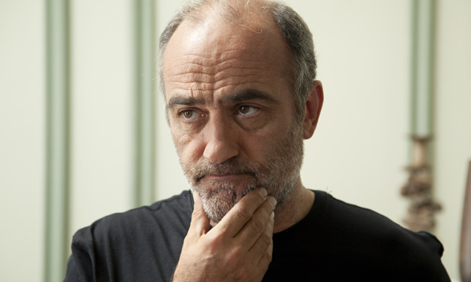

#3780 Captain Alatriste - Blutiger Schwur
Alternativ: Captain Alatriste: The Spanish Musketeer (Englischer Titel)
 
 IMDB-Wertung: 6.1 / 10
IMDB-Wertung: 6.1 / 10  Metascore: 0
Metascore: 0 
Spanien im 17. Jahrhundert: Der prunkvolle Hof und ausschweifende Feste, finstere Gassen und schummrige Tavernen, Intrigen, Liebeshändel, Morde – und ein Mann in geheimer Mission. Ein monumentales Werk über das abenteuerliche Leben des verwegenen Soldaten und Söldners Captain Alatriste, der während des Spanischen Erbfolgekrieges zum Helden Spaniens aufsteigt.
Jahr: 2006
Dauer: 145 Minuten
FSK: 16
Land: Spanien Studio: e-m-s the DVD-CompanyTonspuren:
Untertitel: Deutsch,
Auflösung: 1080p (1920x1040) Größe: 12492 MB
Genre: Thriller, Drama, Abenteuer, Krieg, Liebe, Geschichte
Regisseur: Agustín Díaz Yanes
Drehbuch: Tonje Hessen Schei
Soundtrack:
Darsteller:
 Viggo Mortensen als Diego Alatriste
Viggo Mortensen als Diego Alatriste Elena Anaya als Angélica de Alquézar
Elena Anaya als Angélica de Alquézar Unax Ugalde als Íñigo Balboa
Unax Ugalde als Íñigo Balboa-  Eduard Fernández als Sebastián Copons
 Eduardo Noriega als Conde de Guadalmedina
Eduardo Noriega als Conde de Guadalmedina Ariadna Gil als María de Castro
Ariadna Gil als María de Castro Javier Cámara als Conde Duque de Olivares
Javier Cámara als Conde Duque de Olivares Blanca Portillo als Fray Emilio Bocanegra
Blanca Portillo als Fray Emilio Bocanegra-  Pilar López de Ayala als Mujer de Malatesta
- Nadia de Santiago als Angélica 14 años
 Enrico Lo Verso als Gualterio Malatesta
Enrico Lo Verso als Gualterio Malatesta Carlos Bardem als Alguacil
Carlos Bardem als Alguacil- Alex O'Dogherty als Lope Balboa
- Antonio Resines als Spanish Officer at Rocroi , uncredited
- Juan Echanove als Francisco de Quevedo
-  Antonio Dechent als Curro Garrote
 Francesc Garrido als Martín Saldaña
Francesc Garrido als Martín Saldaña- Jesús Castejón als Luis de Alquézar
- Cristina Marcos als Joyera
 Luis Zahera als Pereira
Luis Zahera als Pereira- Pilar Bardem als Monja
- Nacho Pérez als Íñigo 14 años
- Miguel Alcíbar als Escribano
- Eliana Álvarez als Dorotea
- Nicolás Belmonte als Hombre garito
- Mon Ceballos als Joven
- Alberto Cerrada als Jefe Mosqueteros
- Simon Cohen als Felipe IV
-  Tomás del Estal als Teniente
- Jos�� Antonio Gallego als Alguacil
- María Jesús Hoyos als Madre Pereira
- Charlie Lázaro als Hombre moribundo
- Mariano Llorente als Carnicero
- Cipriano Lodosa als Criado Guadalmedina
- José Luis Manrique als Hombre
- Enrique Martínez als Bravo
- Ignacio Mateos als Fabio
- Javier Mejía als Príncipe de Gales
- Christophe Miraval als Capitán Francés
- Diego Moreno als Jaraffa
- Roberto Mori als Teodoro
- Pablo Olewski als Pisaverde
-  Francesc Orella als Capitán Bragado
- Alber Ponte als Alguacil
- Ana Ramos als Anarda
- David Reymonde als Ganzúa
- Juan Ruiz als Olmedilla
- Jesús Ruyman als Sargento mayor
- José María Sacristán als Octavio
- Artur Sala als Dominico calvo
Datei: X:\2006(A-F)\Captain Alatriste - Blutiger Schwur (2006, FSK16, 1920x1040).mkv seit 08.06.2016
Festplatte: HD 2005(G-Z)-2006(A-Z)
 Es gibt insgesamt 56 Filme in der Gruppe '2006(A-F)'
Es gibt insgesamt 56 Filme in der Gruppe '2006(A-F)'